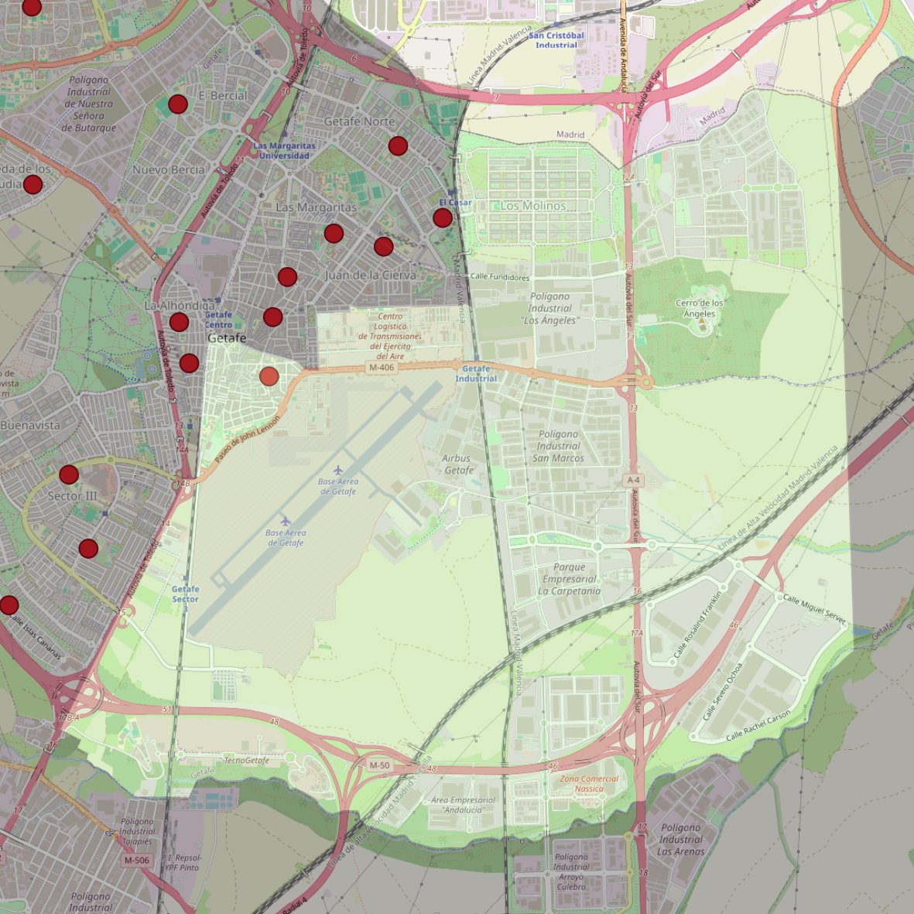

Santa María Magdalena

- Arciprestazgo
- Getafe
- Población
- Getafe
- Dirección postal
- Pza. de la Magdalena, 1
- Código postal
- 28901
- Extensión
- 30,56 km² (3.056 ha)
- Teléfono
- 916 825 012
- Correo electrónico
- catedral@diocesisgetafe.es
Límites territoriales según el decreto
“Partiendo de la confluencia del ferrocarril Madrid-Badajoz con la calle Leganés, arrancan por el eje de la calle Leganés (en dirección sureste); continúan por el eje de la calle San José (en dirección sureste), por el eje de la calle Arboleda (en dirección sureste), por el eje de la glorieta de la Base Aérea (en dirección este), por el eje de la calle Comadrona Asunción Fernández (en dirección norte), por el eje de la calle Plus Ultra (en dirección este), por el eje de la Avenida de Los Angeles (en dirección este) hasta el ferrocarril Madrid-Alicante-Cádiz; siguen por el eje de las vías de dicho ferrocarril (en dirección noroeste) hasta el término municipal de Madrid y por los límites de los términos municipales de Getafe y Madrid (en dirección este) hasta el Camino Alto de Los Llanos; continúan, en línea recta imaginaria, hasta el término municipal de Pinto; avanzan por los límites de los términos municipales de Getafe-Pinto y Getafe-Fuenlabrada (en dirección oeste), por el eje de la carretera N-401 (en dirección noreste), por el eje de la M-406 (paso elevado sobre la N-401;en dirección noreste), y por el eje de las vías del ferrocarril Madrid-Badajoz (en dirección noreste) hasta la confluencia con la calle Leganés, punto de partida”.